Autonomous Medicine Dispensing and Distribution Robot (2024-2025)

Project Information
- Institution Swinburne University of Technology
- Duration 2024 - 2025 (2 Semesters)
- Supervisors Dr. Evon Lim Wan Ting & Ir. Chai Pui Ching (Co-Supervisor)
- Technologies ROS2, Nav2, Gazebo, Qt, C++, SLAM
- Final Report
- Presentation
- Paper Conference
- GitHub (soon)
Project Overview
Healthcare systems worldwide face mounting pressure to improve efficiency while maintaining high standards of patient care. This project addresses the development of an autonomous medicine dispensing and distribution robot capable of navigating hospital environments safely and efficiently.
Software Implementation & Simulation
The simulation phase focuses on developing and validating the robot's navigation system using ROS2 and Gazebo. The system implements advanced algorithms for autonomous navigation in hospital environments, featuring sophisticated path planning, localization, and obstacle avoidance capabilities.
System Architecture
Project Demo
See the autonomous medicine dispensing robot in action with real-time navigation, obstacle avoidance, and path planning demonstrations.

Robot autonomously navigating hospital environment with dynamic obstacle avoidance and optimal path planning
ROS2 Navigation Framework
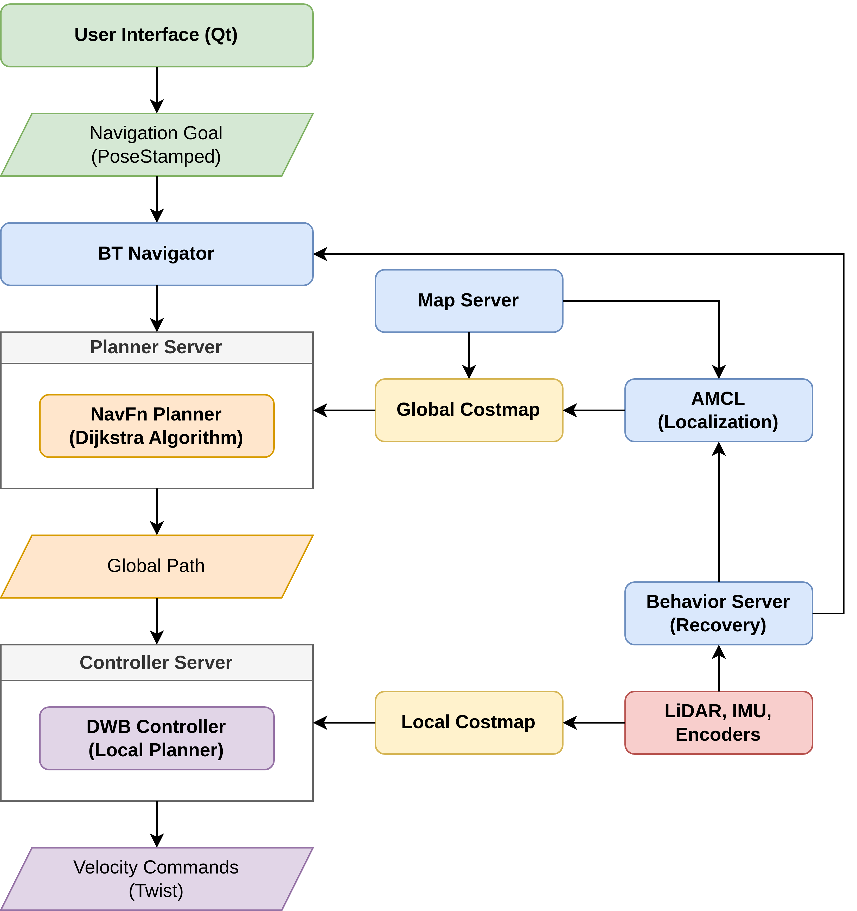
Navigation Algorithms
- Global Planning: NavFn with Dijkstra's algorithm
- Local Planning: Dynamic Window Approach (DWA)
- Localization: Adaptive Monte Carlo Localization (AMCL)
- Recovery: State machine with fallback behaviors
- 20Hz planning frequency
- 0.5m goal tolerance
- 500 particles for AMCL
- Real-time obstacle avoidance
Differential Drive Kinematics
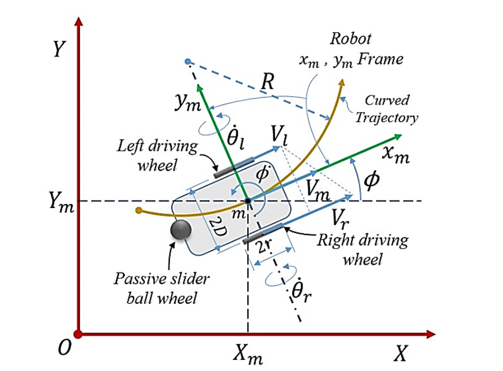
Mathematical Model
v = (r/2)(ωr + ωl)ω = (r/L)(ωr - ωl)State Transformation:
Ẋ = v cos φẎ = v sin φφ̇ = ωWhere: r = wheel radius, L = wheelbase, ωr,l = wheel angular velocities, φ = orientation
Robot Parameters
- Wheel radius: 0.1 m
- Wheelbase: 0.3 m
- Mass: 18 kg
- Max velocities: 1.5 m/s, 1.0 rad/s
Extended Kalman Filter (EKF) Sensor Fusion
State Vector (15D):
x = [x, y, z, φ, θ, ψ, vx, vy, vz, φ̇, θ̇, ψ̇, ax, ay, az]TPrediction Step:
xk = xk-1 + vxΔt cos ψ - vyΔt sin ψyk = yk-1 + vxΔt sin ψ + vyΔt cos ψψk = ψk-1 + ψ̇ΔtUpdate Equations:
Kk = Pk|k-1HT(HPk|k-1HT + R)-1xk = xk|k-1 + Kk(zk - h(xk|k-1))
Sensor Integration
- Wheel Odometry: vx, vy, ψ̇
- IMU: φ, θ, ψ, ψ̇, ax
- Update Rate: 30 Hz
- 2D Mode: Enabled for hospital environments
- Position RMSE: 0.12m
- Orientation RMSE: 0.08 rad
- Computation: 1.7ms/cycle
- Hardware: AMD Ryzen 5-4600H
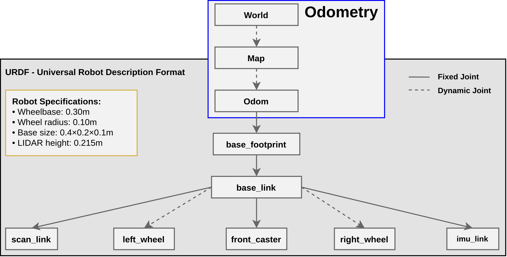
Navigation State Management
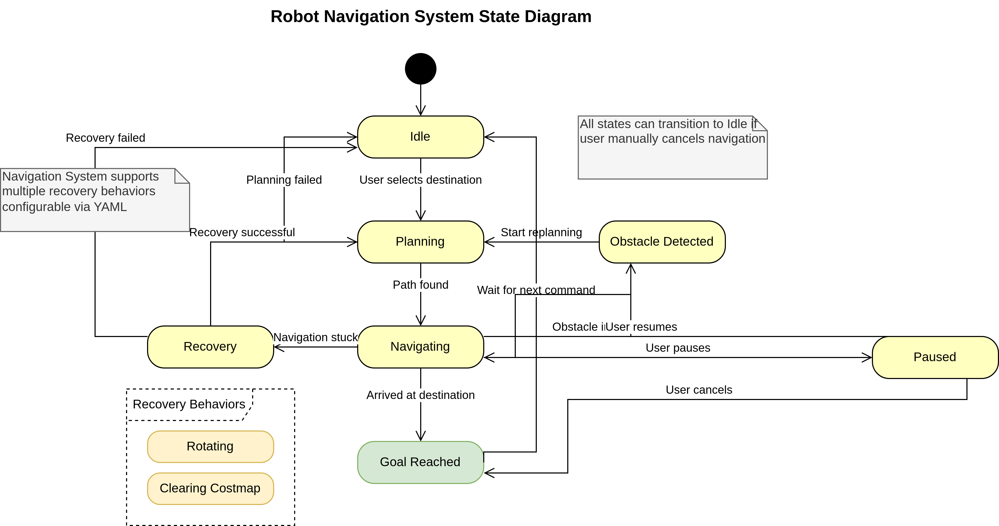
Operational States
- Idle: Waiting for navigation goal
- Planning: Computing optimal path
- Navigating: Following planned route
- Recovery: Handling obstacles/failures
- Goal Reached: Successful completion
Recovery Behaviors
- Clear costmap around robot
- Rotate in place to clear obstacles
- Back up and retry planning
- Emergency stop if needed
Qt-Based User Interface
GUI Features
- Interactive Map: Click-to-navigate functionality
- Waypoint Queue: Multi-destination routing
- Real-time Status: ETA, distance, progress
- Manual Override: Emergency joystick control
- Preset Locations: Hospital room shortcuts
- Qt Framework with C++
- ROS2 Action Client integration
- Real-time topic subscription
- Custom event handling system
Software Architecture Diagrams
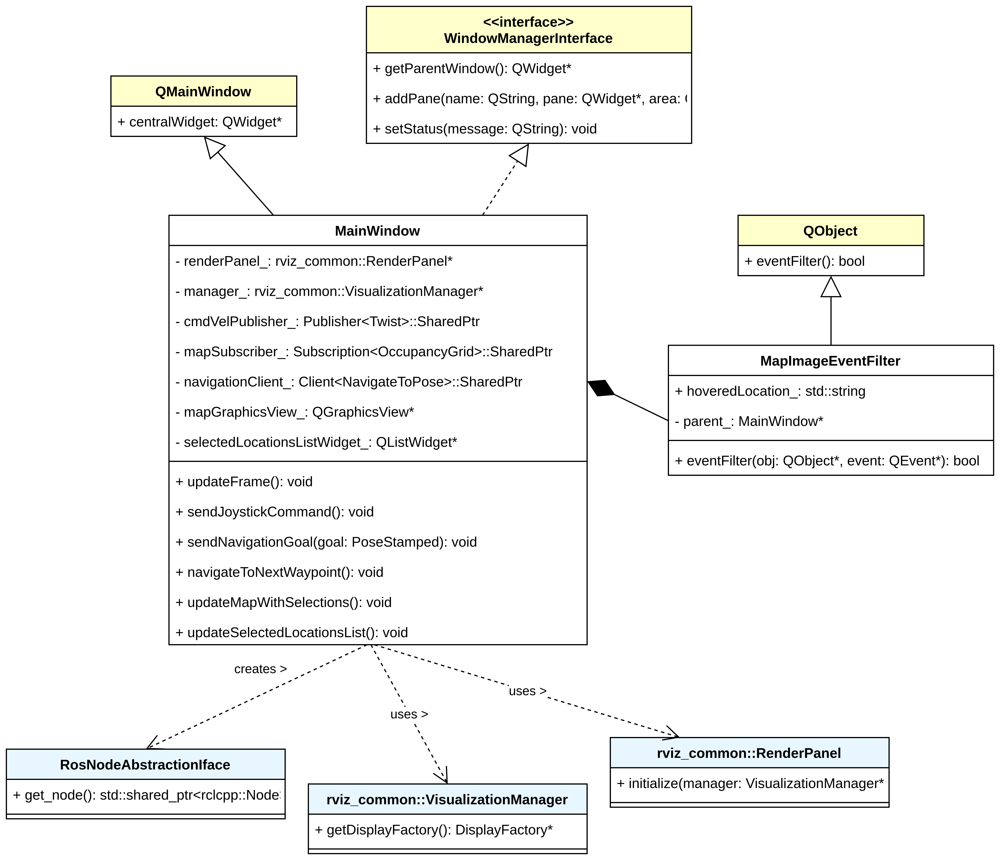
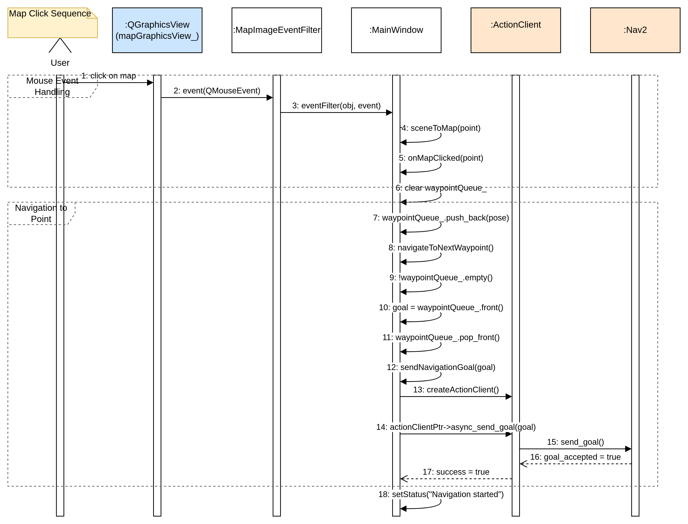
Manual Control System

Safety Features
- Emergency Override: Instant manual control
- Dead-man Switch: Auto-stop on button release
- 10Hz Publishing: Responsive control commands
- Velocity Limiting: Safe maximum speeds
- Lambda slot functions for buttons
- QTimer for periodic publishing
- Velocity command management
- Safe shutdown protocols
Simulation Results & Testing
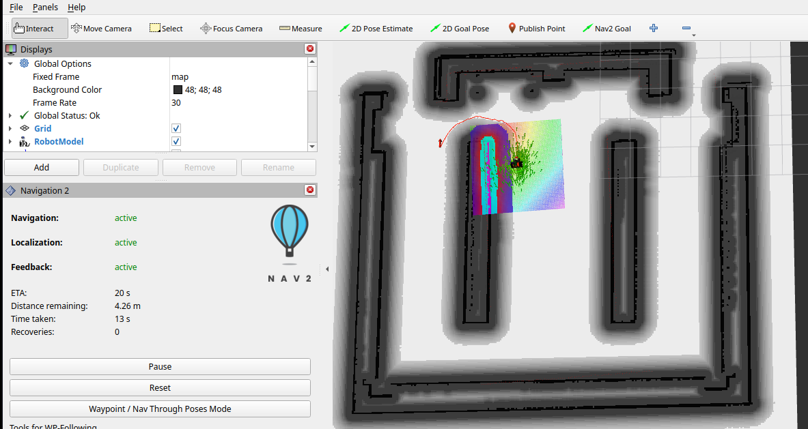
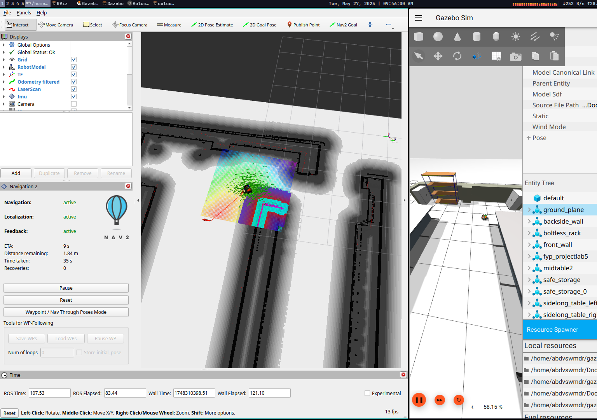
Testing Methodology & Results
| Test Scenario | Runs | Success Rate |
|---|---|---|
| Open Environment | 10 | 100% |
| Cluttered (Obstacles) | 10 | 90% |
| Multi-waypoint | 50 | 88% |
Performance Metrics
- Localization: 0.12m position RMSE
- Orientation: 0.08 rad accuracy
- Planning Time: <200ms average
- Recovery Events: <5% of navigation attempts
- Computational Load: <30% CPU usage
Robot Design Models
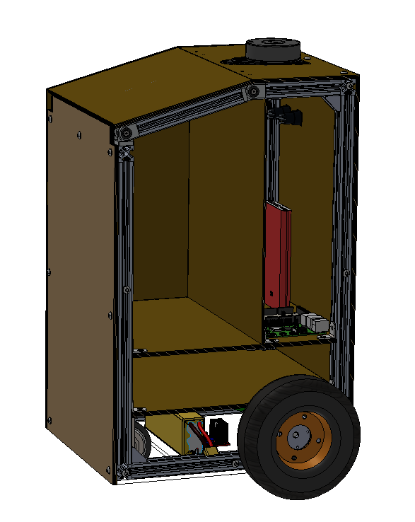
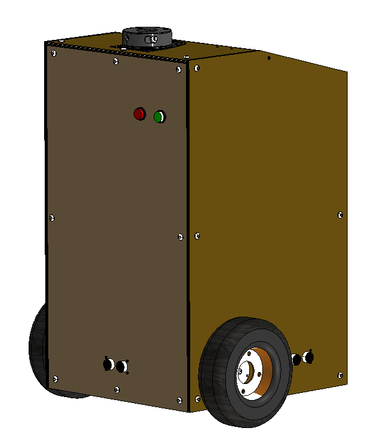
Video Demonstration
Full walkthrough of the simulation system with detailed explanations
Watch on YouTubeHardware Implementation (In Progress)
The hardware phase involves building the physical robot based on the validated simulation design. This phase focuses on integrating real sensors, actuators, and embedded systems.
Planned Hardware Architecture
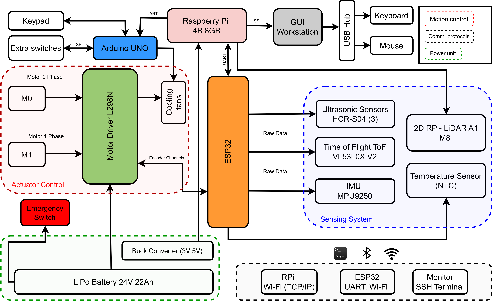
Hardware Components
- Main Controller: Raspberry Pi 4B for high-level navigation and ROS2
- Low-Level Control: ESP32/Arduino for motor control and sensor interfacing
- LiDAR Sensor: RPLiDAR A1 M8 (360° scanning, 12m range)
- IMU: 9-axis inertial measurement unit for orientation tracking
- Motors: Differential drive system with wheel encoders
- Power System: Rechargeable battery pack with power management
Development Status
Current Progress
The hardware implementation is currently in progress as a continuation of the FYP2 simulation work. The goal is to validate the simulation results with a physical prototype.
Next Steps
- Physical robot assembly and component integration
- Real-world sensor calibration and testing
- Performance comparison between simulation and hardware
- Hospital environment testing and validation
- Safety system implementation and emergency protocols
Expected Outcomes
The completed hardware implementation will demonstrate the practical applicability of the navigation algorithms developed in simulation, providing a working prototype for potential deployment in healthcare settings.